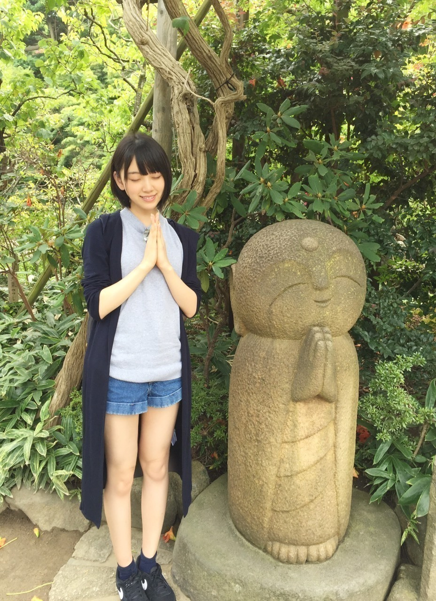

2015/0907Mon金木犀の秋探し
ペットボトルのお茶のラベルに
書いてある色んな人が投稿した
季節の俳句をついつい見てしまう
堀未央奈です♪
ライブが終わり、5日間の夏休み。
私は中学からの親友と2人で
ディズニー、鎌倉、江ノ島に
行ってきました！
鎌倉、江ノ島は
海街diaryを観て
また行きたくなり人生2回目。
極楽寺駅、長谷寺、鎌倉大仏...
次は桜が満開の季節に行きたいなぁ

あとは"食"
カツ丼
定食屋しゃもじのお刺身定食
パンケーキ
ステーキ
江ノ島バーガー...
沢山食べた♪♪

お寺や駅に沢山行きました
はせ を ながたに
としばらく呼んでいて江ノ電の中で
ながたに駅が〜
と話してました。
言い間違いは恥ずかしいのう
1日乗車券【のりおりくん】
お得でした！ありがとう´∩ω∩`♡

海の近くに行ってもこうやって
お茶したり遠くから海を見るのが好き。
中学生以来、遊びで海に行ったり
プールも学校の授業以外行かなかったから
いつか大人になったら
実際に泳いでみたいなぁ。
まずは泳げるようにならないと...笑
その前日にはディズニーへ♪
私が原宿の古着屋で買ってきた大きめの
パーカーをお揃いで着て行きました。
乗り物の中でもスプラッシュマウンテンと
スペースマウンテンが未だに怖くて
スプラッシュで、落ちる時に
横を向くと怖くないよ！って私が
横を向いてつられて友達も横を向いて
よく分からない写真になりました。笑
やっぱり私はプーさんのハニーハントが
1番好きです
はちみつの良い香りがするし
ティガーと一緒に跳ねるのも大好き！
今は凄くカリフォルニアの
ディズニーワールドに行きたい気分。
玲奈さん詳しいから色々聞いてみようっ
かりんとパリのディズニーに
行く約束もして
楽しみな事が増えました^_^
この休暇で中学からずっと一緒にいた
親友と久しぶりに会って
話したり笑ったりできて幸せでした。
お互い夢に向かって
頑張ろうね！
よし、9月ももう半ば。
年末まで全力で駆け抜けるぞ〜^o^

そして私の生誕Tシャツが完成！
手書きで自画像を描いたよ〜♪
初心を忘れない。という意味を込めて
初めて選抜に入って作っていただいた
バレッタの衣装
猫目、富士山型唇、情けないたれ眉毛
前下がりショートヘア
左手はライブ中手を振る様子...
私なりに「私」を一生懸命
書きました(*･ω･)ノ
着てくださったら嬉しいです
告知
◎かとうれいさんの画集「girl friend」
◎StreetJACK 10月号
◎B.L.T. 10月号
9/15 EX大衆発売
9/17 週間プレイボーイ発売
◎毎週日曜日 0:00〜
【乃木坂工事中】
◎毎週金曜日 24:12〜
【初森ベマーズ】
【初森ベマーズ】
◎毎週月曜 25:29〜
【NOGIBINGO!5】
コメント返し
◎ゆーやさん
いやいや(´；ω；｀)
◎生井嵐さん
私もパジャマ着るからお揃いやね♪
◎わたるさん
うちわ見つけました！ありがとう♡
◎タイヤのAさん
嬉しいです^o^頑張ります！
◎パプマンさん
thank you♡
◎もっと強くかっこよくできるように
お勉強します...！
今は長いけどまた伸ばす時も
あるとおもう(*･ω･)ノサンタ着るよん！
以上
そして、アンダーライブ4rd開催が
決定しました！
日付 10.15〜10.25
場所 AiiA 2.5 Theater Tokyo
初めてのアンダーライブで
センターをやらせていただきます。
引っ張っていきたいというよりかは
自然と任せてもらえるように私自身が
頑張らなくちゃいけないなと思います。
まだ不安な気持ちもありますが
今までアンダーライブを幾つか観に行って
メンバーのパフォーマンスや表情に
魅力されたり元気を貰ったり
アイドルになりたい。って思うきっかけ
となった初心の気持ちを思い出したりと
凄くパワーを貰いました
なので私も今回のアンダーライブを
良いものにできるように全員で
力を合わせて頑張りたいと思います！
皆さん是非、見に来て下さい！

ではでは
おやすみおな(_ _).｡o○
2015/09/07 21:36
コメント(830)
こんばんは(*^◯^*)
昨日、今日と握手会ありがとうございました！
俺も明日から仕事なのですが、取り急ぎお礼を言わせていただきます！
詳しくはまたコメントします。
今日はジェラピケのパジャマ姿と、「五目御飯、美味しかったなぁ…」と言った時の幸せに満ち溢れた笑顔が見れて、本当に嬉しかったです(*^◯^*)
俺も食が好きなので、また話しましょう( ´ ▽ ` )ﾉ
では、お互い今日も頑張りましょう！
昨日、今日と握手会ありがとうございました！
俺も明日から仕事なのですが、取り急ぎお礼を言わせていただきます！
詳しくはまたコメントします。
今日はジェラピケのパジャマ姿と、「五目御飯、美味しかったなぁ…」と言った時の幸せに満ち溢れた笑顔が見れて、本当に嬉しかったです(*^◯^*)
俺も食が好きなので、また話しましょう( ´ ▽ ` )ﾉ
では、お互い今日も頑張りましょう！
みおなこんばんは！
しみりだよヽ(´―ˋ)ノ
神宮の等身大パネル当たったって
二回くらい報告してたやつです。
そしてこれについて謝らなければならないのだけど、
実は日奈子のとトレードすることが決まっていて…
お互いより大切にできる人の元にいくわけです。
大切にする、とか言ったけれども
もっと大切にしてくれる方の元に渡るので
ご安心を♪
9/22も握手行くからよろしくね！
しみり
しみりだよヽ(´―ˋ)ノ
神宮の等身大パネル当たったって
二回くらい報告してたやつです。
そしてこれについて謝らなければならないのだけど、
実は日奈子のとトレードすることが決まっていて…
お互いより大切にできる人の元にいくわけです。
大切にする、とか言ったけれども
もっと大切にしてくれる方の元に渡るので
ご安心を♪
9/22も握手行くからよろしくね！
しみり
未央奈さん、今日は個別握手会お疲さま～
関東では久しぶりの個別だったから楽しかったよヽ(*´∀｀)ノ
昨日から、ライブ２つに握手会２つ。
盛り沢山な週末だったから、今日はゆっくり休んでくださいね。
って、この時間じゃもう寝ているし、仮に起きていたらすでにゆっくり休むことができない時間か'`,､('∀`) '`,､
関東では久しぶりの個別だったから楽しかったよヽ(*´∀｀)ノ
昨日から、ライブ２つに握手会２つ。
盛り沢山な週末だったから、今日はゆっくり休んでくださいね。
って、この時間じゃもう寝ているし、仮に起きていたらすでにゆっくり休むことができない時間か'`,､('∀`) '`,､
みおなおはよう
地元の女性は、 もちろんみおちゃんを
応援しているけど、 握手には行きづらいとのこと、 何回も、『みおちゃんは良い子 応援してください！』って、
言っていたよ〜♪
みおちゃんは、皆んなから
愛されているんだお〜！
*\(^o^)/*
応援しているけど、 握手には行きづらいとのこと、 何回も、『みおちゃんは良い子 応援してください！』って、
言っていたよ〜♪
みおちゃんは、皆んなから
愛されているんだお〜！
*\(^o^)/*
未央奈、
昨日と今日は久しぶりに握手会で、
かわいい未央奈に会えてうれしかったよ。
未央奈は、グレーのおしゃれな
レコード柄のTシャツに
足長ショートパンツで、
すっごくかわいかったね。
昨日は未央奈とは、こんな感じで
お話しできたよね。
・Tシャツおしゃれだね。
・神宮球場のアンダー曲のメドレーよかったよ。
・カチドキや、「耳をすませば 」の一人芝居よかったよ。
演技うまくなってきたよね。
・武道館2日間ってすごいよね。
とか、お話しできてよかったよ。
地中海バレッタのお土産は、
受付に渡しておいたよ。
気に入ってもらえるといいな。
次は9月22日だね。
また、かわいい未央奈に
会えるのを楽しみにしてるよー。
昨日と今日は久しぶりに握手会で、
かわいい未央奈に会えてうれしかったよ。
未央奈は、グレーのおしゃれな
レコード柄のTシャツに
足長ショートパンツで、
すっごくかわいかったね。
昨日は未央奈とは、こんな感じで
お話しできたよね。
・Tシャツおしゃれだね。
・神宮球場のアンダー曲のメドレーよかったよ。
・カチドキや、「耳をすませば 」の一人芝居よかったよ。
演技うまくなってきたよね。
・武道館2日間ってすごいよね。
とか、お話しできてよかったよ。
地中海バレッタのお土産は、
受付に渡しておいたよ。
気に入ってもらえるといいな。
次は9月22日だね。
また、かわいい未央奈に
会えるのを楽しみにしてるよー。
堀ちゃ～ん
未央奈おはよう。
朝から撮影なんだ
お腹空いたね(笑)
俺はラーメンと半チャーハン食べてるよ。
今日も頑張ろう。
勝っても負けても虎命タイガース鳥谷こと秀幸（ヒデユキ）より
朝から撮影なんだ
お腹空いたね(笑)
俺はラーメンと半チャーハン食べてるよ。
今日も頑張ろう。
勝っても負けても虎命タイガース鳥谷こと秀幸（ヒデユキ）より
未央奈こんにちはー(*'.'*)
明日のnogibingo未央奈出演するのかな？
楽しみな企画だから未央奈に出て欲しいなー。
そういえば未央奈ってロックテイストのファッションも凄く似合うよね！
ちょっとボーイッシュな雰囲気の未央奈も大好き(p萌q♡ω♡+*)・+
明日のnogibingo未央奈出演するのかな？
楽しみな企画だから未央奈に出て欲しいなー。
そういえば未央奈ってロックテイストのファッションも凄く似合うよね！
ちょっとボーイッシュな雰囲気の未央奈も大好き(p萌q♡ω♡+*)・+
755のアディダスパーカーの未央奈可愛すぎる(ू ˃̣̣̣̣̣̣o˂̣̣̣̣̣̣ ू)♡
アディダス私も最近凄く好きで欲しいなーと思ってるの！
スニーカーも服も可愛いよね(*'.'*)
古着か！
あれ今気づいたけど未央奈nogibingoで古着お化け憑いてそうで怖いって言ってたよね！？笑
克服したの？
私は古着屋さんの服とかリサイクルショップとか宝探しみたいで好きー(ू•‧̫•ू⑅)
色んな古着屋さん見てみたいなー。
アディダス私も最近凄く好きで欲しいなーと思ってるの！
スニーカーも服も可愛いよね(*'.'*)
古着か！
あれ今気づいたけど未央奈nogibingoで古着お化け憑いてそうで怖いって言ってたよね！？笑
克服したの？
私は古着屋さんの服とかリサイクルショップとか宝探しみたいで好きー(ू•‧̫•ू⑅)
色んな古着屋さん見てみたいなー。
こんにちは～
握手会、、お疲れ様～
涼しくなって、、今日から、秋だね～
自分の、、名前、、涼・りょう、、ってことに、、(^_^)
、、漁、猟・りょう、、じゃないよ。。(^_^)(笑)
じゃあ、、またね～
握手会、、お疲れ様～
涼しくなって、、今日から、秋だね～
自分の、、名前、、涼・りょう、、ってことに、、(^_^)
、、漁、猟・りょう、、じゃないよ。。(^_^)(笑)
じゃあ、、またね～
12日の全握行きました。
たくさんいたと思うけど、未央奈に「嫌なヤツ！」をお願いした者です。
何回もリクエストされたろうに、笑顔でやってくれてありがとう。ちょー嬉しかったっす！
\(▽‾\(‾▽‾)/‾▽)/カンパーイ
今度はしっかりお話したいな、と思ってます。
では、また。
たくさんいたと思うけど、未央奈に「嫌なヤツ！」をお願いした者です。
何回もリクエストされたろうに、笑顔でやってくれてありがとう。ちょー嬉しかったっす！
\(▽‾\(‾▽‾)/‾▽)/カンパーイ
今度はしっかりお話したいな、と思ってます。
では、また。
連日お疲れ様です。
今日は、風が、湿度が低くて、気持ちいいですね。 まさに秋。
みおなちゃん、こんばんは。
昨日の握手会お疲れ様でした。僕は、めっちゃ行きたかったです。
４枚目の写メのみおなちゃん、めっちゃかわいいです。
みおなちゃん、体調に気をつけて仕事頑張ってね。
またコメントするね。
昨日の握手会お疲れ様でした。僕は、めっちゃ行きたかったです。
４枚目の写メのみおなちゃん、めっちゃかわいいです。
みおなちゃん、体調に気をつけて仕事頑張ってね。
またコメントするね。
仕事ご苦労様。
握手会は、仕事だったので行かなかった。
今度は行くね！ 大好きな鶏肉を食べた。
もちろん野菜も食べました。
握手会は、仕事だったので行かなかった。
今度は行くね！ 大好きな鶏肉を食べた。
もちろん野菜も食べました。
みおなちゃんこんばんわ〜♪
アンダーライブいけるかわかんないけど、
１３枚目の全握、名古屋いきます！！
東京は遠くてあまり行けないけど応援してます( ´ ▽ ` )ﾉ
みおなとお地蔵さんの写真、携帯の壁紙にしてます！笑
そして７５５のアイコンにもしてます→ももんが⊿です
その写真のおかげか、ご利益ありました！笑
みおちゃんパワー( *｀ω´)
アンダラも無理せずみおちゃんパワーで頑張ってください！
ももんが
アンダーライブいけるかわかんないけど、
１３枚目の全握、名古屋いきます！！
東京は遠くてあまり行けないけど応援してます( ´ ▽ ` )ﾉ
みおなとお地蔵さんの写真、携帯の壁紙にしてます！笑
そして７５５のアイコンにもしてます→ももんが⊿です
その写真のおかげか、ご利益ありました！笑
みおちゃんパワー( *｀ω´)
アンダラも無理せずみおちゃんパワーで頑張ってください！
ももんが
アンダラ見に行きます。
楽しみです！
楽しみです！
みおなぁ-！ 2日間の握手会お疲れさまでした。昨日の個別お邪魔させてもらったよ 餃子10皿60個の話楽しかったです。
みおなちゃん、こんばんわっ。あっ、乃木坂の堀ちゃん、ホーリーさん、カチドキさん、こんばんは。深夜のおるすばん。。です！乃木坂モバイルメールありがとうね☆ 連日撮影が多いのかな？ 素敵な写真があふれちゃうね☆ おやすみー。またね！
ほりちゃん、握手会お疲れ様でした。
アンダーライブのチケット、抽選倍率がすごかったみたいで
なかなかとれないチケットになってるね。
そんなプラチナチケットがとれたので、目いっぱい応援するね。
武道館のファイナルも、チケットとるの大変そうだね。
きっと武道館も満員になると思うから、頑張ってね！
アンダーライブのチケット、抽選倍率がすごかったみたいで
なかなかとれないチケットになってるね。
そんなプラチナチケットがとれたので、目いっぱい応援するね。
武道館のファイナルも、チケットとるの大変そうだね。
きっと武道館も満員になると思うから、頑張ってね！
未央奈さん、お疲れ様です❗
ε=ε=(ノ≧∇≦）ノ
モバメありがとう❗
今日は、朝からお仕事
お疲れ様です(。・ω・。)ゞ
土日、全握個握、大盛況
だったけどお疲れでは❔
(;＞_＜;)
体調、気を付けてね！(´・ω・`)
私は、お昼ご飯、
普通の弁当でしたよ！
明日のEX大衆、
必ず買いますね！
Ｏ(≧∇≦)Ｏ
755の う〜が〜 が〜う〜
可愛いです(///ω///)♪
個握でやって欲しい。(´-ω-`)
それでは、明日も
頑張って行きまっしょい❗
ヘ(≧▽≦ヘ)♪
お疲れ様(^_^)
休日満喫できたみたいで良かったね
生誕Tシャツ完成したんだね！
ほしい！
アンダーライブ頑張ってね！
初志貫徹
休日満喫できたみたいで良かったね
生誕Tシャツ完成したんだね！
ほしい！
アンダーライブ頑張ってね！
初志貫徹
堀ちゃん、お疲れさまです。
ところで、沙友理さんとみり愛さんの体調が良くないとのこと。
よく休まれて、良くなられますように…。皆さん、あまり無理をしないで、大事にしてください。
沙友理さんは、お姉さんと雰囲気が似てるんでしたね。…私は彼女の優しい笑顔と瞳が大好きです。
堀ちゃんのブログやモバメによく登場するメンバーの方は、自然と親しみがあります。
今回の飛鳥さんとのツーショット、嬉しいな。彼女は沙友理さんと共に、乃木どこの11th選抜発表(命は美しい♪)でのコメントが、印象深いです。こころに残っています。
今朝のモバメ、可愛かったですよ…かけ声とお腹がすいたー、近すぎる！(笑)。
それでは、また。
♪
ところで、沙友理さんとみり愛さんの体調が良くないとのこと。
よく休まれて、良くなられますように…。皆さん、あまり無理をしないで、大事にしてください。
沙友理さんは、お姉さんと雰囲気が似てるんでしたね。…私は彼女の優しい笑顔と瞳が大好きです。
堀ちゃんのブログやモバメによく登場するメンバーの方は、自然と親しみがあります。
今回の飛鳥さんとのツーショット、嬉しいな。彼女は沙友理さんと共に、乃木どこの11th選抜発表(命は美しい♪)でのコメントが、印象深いです。こころに残っています。
今朝のモバメ、可愛かったですよ…かけ声とお腹がすいたー、近すぎる！(笑)。
それでは、また。
♪
こんばんは 未央奈ちゃん(。。)
今日ＢＳジャパンで長良川鉄道の旅番組やっていました。∑(°°)
残念ながら後半しか見れませんでしたが、食料見本品の製作体験をしていたり（のぎどこで売っていたね）、かつ定食等が美味しそうでした。(´･っ。･`)
景色は群馬県と似ています。又群馬はかつが美味しい県でもあり、かつ街道という名前もあります。∋==(j^~^)j
メールありがとう。(..*)
僕はラムを食べました。とても美味しかったのですが、今回は脂肪が多くてまいりました。(´+○+`*) (*̅3̅)
うおぉぉおおーーー! 眠いです。(̅つ̅*)
スミマセン(..)がこの辺にしておきます。
デハデハ お休みなさい 未央奈姫 撮影頑張って
<(´～`)ゝ..oo00〇Ⅹ
今日ＢＳジャパンで長良川鉄道の旅番組やっていました。∑(°°)
残念ながら後半しか見れませんでしたが、食料見本品の製作体験をしていたり（のぎどこで売っていたね）、かつ定食等が美味しそうでした。(´･っ。･`)
景色は群馬県と似ています。又群馬はかつが美味しい県でもあり、かつ街道という名前もあります。∋==(j^~^)j
メールありがとう。(..*)
僕はラムを食べました。とても美味しかったのですが、今回は脂肪が多くてまいりました。(´+○+`*) (*̅3̅)
うおぉぉおおーーー! 眠いです。(̅つ̅*)
スミマセン(..)がこの辺にしておきます。
デハデハ お休みなさい 未央奈姫 撮影頑張って
<(´～`)ゝ..oo00〇Ⅹ
みおなちゃん！
こんばんは(๑`･ᴗ･´๑)
今日も撮影ご苦労様です٩(ˊᗜˋ*)و
今日のお昼はうどんを食べました！はいじ的な事ですが
冷たいうどんは昔から食べれなくて、夏でも温かいうどんが好きです(*´ω`*)耳をすませばの鍋焼きうどんが食べたい。
EX大衆絶対見るね！
耳をすませばの舞台、聖蹟桜ケ丘は好きでお休みが出来ると
用事もないのに行ったりします
街の雰囲気がもう完璧耳をすませばだし、夜景も本当に綺麗で大好きな街です(♡´艸`)
明日絶対見るからね！
さ！明日も仕事頑張ります！
いつもモバメありがとう！なかなかコメント出来ないけど
モバメもブログも元気の源です！
みおなちゃんも季節の変わり目で天気も気温も変わりやすいから体にはくれぐれもお気をつけください(｀･ω･´)ﾉ
こんばんは(๑`･ᴗ･´๑)
今日も撮影ご苦労様です٩(ˊᗜˋ*)و
今日のお昼はうどんを食べました！はいじ的な事ですが
冷たいうどんは昔から食べれなくて、夏でも温かいうどんが好きです(*´ω`*)耳をすませばの鍋焼きうどんが食べたい。
EX大衆絶対見るね！
耳をすませばの舞台、聖蹟桜ケ丘は好きでお休みが出来ると
用事もないのに行ったりします
街の雰囲気がもう完璧耳をすませばだし、夜景も本当に綺麗で大好きな街です(♡´艸`)
明日絶対見るからね！
さ！明日も仕事頑張ります！
いつもモバメありがとう！なかなかコメント出来ないけど
モバメもブログも元気の源です！
みおなちゃんも季節の変わり目で天気も気温も変わりやすいから体にはくれぐれもお気をつけください(｀･ω･´)ﾉ
みおな！
どこにいても何してても応援してるよ！
アンダラ楽しみに待ってる！
キラキラ輝くみおなが見れますように！
更新ありがとう！大好き！
どこにいても何してても応援してるよ！
アンダラ楽しみに待ってる！
キラキラ輝くみおなが見れますように！
更新ありがとう！大好き！
NOGIBINGO!見た( ☆∀☆)
みおなお猿さんになってたね!
可愛かったよ!握手会で付けてよ!!
今日も1日お疲れ様!
おやすみおな(^-^ゞ
未央奈さん、今日も撮影お疲れさま～。
最近ちょっと涼しくなってきたから、風邪ひかないように気をつけてね～ヽ(*´∀｀)ノ
最近ちょっと涼しくなってきたから、風邪ひかないように気をつけてね～ヽ(*´∀｀)ノ
未央奈！
朝方におはようﾟ+(*ﾉｪﾟ)b+ﾟ
今日も相変わらず未央奈への愛が強いです(ू•‧̫•ू⑅)そして重いです(ू•‧̫•ू⑅)笑
私、本当に本当に未央奈に助けてもらう事が多い。
未央奈の顔見れるだけで元気になれるし、未央奈のブログ更新も、番組での活躍とか！
本当に何時も癒してくれて、辛かったりした時も未央奈のおかげで元気になれたり！
本当に未央奈には感謝してるの。
だからこそ絶対恩返しするからね。どうか待ってて下さい。
私、未央奈に支えられながら頑張るから！
それじゃ、またコメントします(ू•‧̫•ू⑅)
朝方におはようﾟ+(*ﾉｪﾟ)b+ﾟ
今日も相変わらず未央奈への愛が強いです(ू•‧̫•ू⑅)そして重いです(ू•‧̫•ू⑅)笑
私、本当に本当に未央奈に助けてもらう事が多い。
未央奈の顔見れるだけで元気になれるし、未央奈のブログ更新も、番組での活躍とか！
本当に何時も癒してくれて、辛かったりした時も未央奈のおかげで元気になれたり！
本当に未央奈には感謝してるの。
だからこそ絶対恩返しするからね。どうか待ってて下さい。
私、未央奈に支えられながら頑張るから！
それじゃ、またコメントします(ू•‧̫•ू⑅)
未央奈さん、おはようございます❗
ε=ε=(ノ≧∇≦）ノ
10月18日の個握、
部数が１つ増えたようで、
おめでとう
それだけ未央奈さんを
応援してくれている人
が増えた事が嬉しいです❗
私も行けたら行きます❗
不安になることはないよ
みおなおはよう EX大衆買ったよ
未央奈～おはよう～！！
昨日、ブログ送ったけど、載らないよ～？
日曜の乃木坂工事中に、未央奈出てなくて寂しい・・・
昨日、ブログ送ったけど、載らないよ～？
日曜の乃木坂工事中に、未央奈出てなくて寂しい・・・
未央奈こんにちわ
未央奈が耳すまの聖地でロケをしたEX大衆買ったよ
ページを開いた瞬間、笑ってる顔が満載で、見てるこっちまで一気に爽やかな風にあたってるみたいな気持ちになったよー
オリジナルと少し違う服装だけど、どれも可愛くて、どのカットの未央奈も最高ー

自転車に乗ったり、階段でジャンプしたり、未央奈が僕らと同じふつうの学生になったみたいな、そんな気持ちにさせられた
僕もいつかあの階段のとこ、行ってみょっと
未来のことはまだ分からないけれど、原石育てていけたらいいね
PS. こんど未央奈が考えた物語を聞かせて
もしPVの監督をするとしたらやっぱりホラーなのかな？
たいめし。
未央奈が耳すまの聖地でロケをしたEX大衆買ったよ
ページを開いた瞬間、笑ってる顔が満載で、見てるこっちまで一気に爽やかな風にあたってるみたいな気持ちになったよー
オリジナルと少し違う服装だけど、どれも可愛くて、どのカットの未央奈も最高ー
自転車に乗ったり、階段でジャンプしたり、未央奈が僕らと同じふつうの学生になったみたいな、そんな気持ちにさせられた
僕もいつかあの階段のとこ、行ってみょっと
未来のことはまだ分からないけれど、原石育てていけたらいいね
PS. こんど未央奈が考えた物語を聞かせて
もしPVの監督をするとしたらやっぱりホラーなのかな？
たいめし。
みおな、握手会お疲れ様！
全握でしげさんに紹介してもらったんだけど、分かるかな？
あの時は名前呼んでくれてありがとう♪
すごい嬉しかったよo(^o^)o
ちなみに5月の全握でもみおなレーン行ったから2回目ましてだったの(笑)
また行くね、10/18の追加分に申し込むつもりでいるよ
あと1/30は既に当選してるよ！
そして、アンダラは外れちゃったんだけど、お友達が同行誘ってくれたので、行くね～
初めてのアンダラ楽しみにしてる♪
金木犀といえば、みおなが前に金木犀の香りの香水のこと書いてたことあったよな？
あれがずっと気になってる(笑)私もほしい
10月に会えるの楽しみにしてるねー
全握でしげさんに紹介してもらったんだけど、分かるかな？
あの時は名前呼んでくれてありがとう♪
すごい嬉しかったよo(^o^)o
ちなみに5月の全握でもみおなレーン行ったから2回目ましてだったの(笑)
また行くね、10/18の追加分に申し込むつもりでいるよ
あと1/30は既に当選してるよ！
そして、アンダラは外れちゃったんだけど、お友達が同行誘ってくれたので、行くね～
初めてのアンダラ楽しみにしてる♪
金木犀といえば、みおなが前に金木犀の香りの香水のこと書いてたことあったよな？
あれがずっと気になってる(笑)私もほしい
10月に会えるの楽しみにしてるねー
＊＊＊＊＊＊＊＊＊＊＊＊＊＊＊＊＊＊＊＊＊＊＊＊
みおな！タンポポだけどもー♪
(●´∀｀●)/
みおなが一番不思議少女だよ!!
可愛いすぎる♪
(。≧∇≦。)
みおなのジジになりたい♪タンポポでした♪
＊＊＊＊＊＊＊＊＊＊＊＊＊＊＊＊＊＊＊＊＊＊＊＊
みおな！タンポポだけどもー♪
(●´∀｀●)/
みおなが一番不思議少女だよ!!
可愛いすぎる♪
(。≧∇≦。)
みおなのジジになりたい♪タンポポでした♪
＊＊＊＊＊＊＊＊＊＊＊＊＊＊＊＊＊＊＊＊＊＊＊＊
今日の休み時間はずーっと耳すまのサントラを聴いてるー
未央奈はふだんから自転車乗るん？
坂道を降るびっくりした笑顔に引き込まれる
それから、
ペットボトル持ってるクシャクシャ顏の未央奈
階段の上でジャンプしてカンカン帽がフワッとなる未央奈
どれも最高すぎてめちゃくちゃ癒される
いつか未央奈単独の写真集出てほしいなー
たいめし。
未央奈はふだんから自転車乗るん？
坂道を降るびっくりした笑顔に引き込まれる
それから、
ペットボトル持ってるクシャクシャ顏の未央奈
階段の上でジャンプしてカンカン帽がフワッとなる未央奈
どれも最高すぎてめちゃくちゃ癒される
いつか未央奈単独の写真集出てほしいなー
たいめし。
未央奈の「ウキーッ」に毎回萌える(p萌q♡ω♡+*)・+
一発芸の出来は、。
(´・ω・｀)
ww
いや、いきなりの無茶振りだったわりにといったらなんだけどw、面白かったよ！？w
でもジバニャンは伝わらなかったのかもねw
私本物を知らないから似てるのかわからなかった(*ﾟｪﾟ*)ﾉ笑
厚切りジェイソンのモノマネはかなり勢いがあったね！w
未央奈のやりきるスタンスが好き(*'.'*)
あと無茶振りされた時と一発芸披露後の未央奈の表情が面白可愛かった(ू•‧̫•ू⑅)
未央奈「ワタスがなにか？」の時にしかり最近番組での表情とかもどんどん面白い感じにする様になってるし、未央奈が言ってきた遠慮を無くして殻を破りたいっていうのがどんどん現実になってきてるね。
1期生の先輩メンバーの中にいても未央奈らしさを出せるようになってきてて、私も嬉しい！
未央奈最近は特に、本当番組に出演するたびに爪痕残してて活躍してくれて本当に凄いよ。
皆んな気付いてると思うよ。勿論。
未央奈は凄く尊敬する存在でもあるし、私も見習わなきゃ！頑張ろう！って思える。
何時も本当に有難う！(ू ˃̣̣̣̣̣̣o˂̣̣̣̣̣̣ ू)♡
一発芸の出来は、。
(´・ω・｀)
ww
いや、いきなりの無茶振りだったわりにといったらなんだけどw、面白かったよ！？w
でもジバニャンは伝わらなかったのかもねw
私本物を知らないから似てるのかわからなかった(*ﾟｪﾟ*)ﾉ笑
厚切りジェイソンのモノマネはかなり勢いがあったね！w
未央奈のやりきるスタンスが好き(*'.'*)
あと無茶振りされた時と一発芸披露後の未央奈の表情が面白可愛かった(ू•‧̫•ू⑅)
未央奈「ワタスがなにか？」の時にしかり最近番組での表情とかもどんどん面白い感じにする様になってるし、未央奈が言ってきた遠慮を無くして殻を破りたいっていうのがどんどん現実になってきてるね。
1期生の先輩メンバーの中にいても未央奈らしさを出せるようになってきてて、私も嬉しい！
未央奈最近は特に、本当番組に出演するたびに爪痕残してて活躍してくれて本当に凄いよ。
皆んな気付いてると思うよ。勿論。
未央奈は凄く尊敬する存在でもあるし、私も見習わなきゃ！頑張ろう！って思える。
何時も本当に有難う！(ू ˃̣̣̣̣̣̣o˂̣̣̣̣̣̣ ू)♡
みおなちゃん、こんばんは。
NOGIBINGO!5、僕の住む北海道（道東）は放送されないので、動画サイトで見たよ。みおなちゃん、めっちゃかわいかったよ。
みおなちゃん、体調に気をつけて仕事頑張ってね。
またコメントするね。
NOGIBINGO!5、僕の住む北海道（道東）は放送されないので、動画サイトで見たよ。みおなちゃん、めっちゃかわいかったよ。
みおなちゃん、体調に気をつけて仕事頑張ってね。
またコメントするね。
ＥＸ大衆見ました。 発売日が、自分の誕生日と一緒なので、
嬉しかったです。
最初のページの左側の写真の、未央奈さんの、笑顔は、最高です。
あんな表情は、自分が、見たグラビアの中では、初めてです。
他の写真でも、すっぴんですが、相変わらず、美しいです。
自分で、物語を、作って、録音してる っていうのも初めて知り
ました。 すごいですね。本当に好きなのが、解りました。
また、ソログラビアが、見たいですね。
失礼しました。
5部復活したね♪
応募して当たったら行くからね!
(〃´・ω)ﾉ ｺﾝﾊﾞﾝﾊ♪
遊です。
昨日のお昼はしらすですか
未央奈しらす好きなんだね
俺も～
江ノ島行った時とびっちょってお店行った？
前に行ったことあるんだけど、そこで食べれる生しらすやしらすのかき揚げがすごく美味しかったΨ( 'ч'♡ )
まだ行ったことなかったらぜひぜひ
10月追加したね～
未央奈におめでとうって直接言えるチャンスが増えたわけだけどどうしよ～
5部って蘭世も琴子もあるから一番忙しい時間なんだよなぁ(ｐωｑ)
アンダラの楽天先行も当たったらお金払わなくちゃだし
(o ><)oﾓｫｫｫｫ～ｯ!!
あっ、今からEX大衆探しに行ってきます(*`･ω･)ゞ
未央奈に蘭世に琴子が出てるとか買わないわけにはいかないからね(((^-^)))
聖蹟で撮ったんだよね？
電車で5分ぐらいのとこだからちっちゃい頃から何度も遊びに行ったことあるし、見覚えある場所見つかるかなぁ
楽しみ楽しみo(^o^)o
ゆっくり寝れるんだね
しっかり疲れをとってくださいなヽ(*´∀｀)ノ
遊です。
昨日のお昼はしらすですか
未央奈しらす好きなんだね
俺も～
江ノ島行った時とびっちょってお店行った？
前に行ったことあるんだけど、そこで食べれる生しらすやしらすのかき揚げがすごく美味しかったΨ( 'ч'♡ )
まだ行ったことなかったらぜひぜひ
10月追加したね～
未央奈におめでとうって直接言えるチャンスが増えたわけだけどどうしよ～
5部って蘭世も琴子もあるから一番忙しい時間なんだよなぁ(ｐωｑ)
アンダラの楽天先行も当たったらお金払わなくちゃだし
(o ><)oﾓｫｫｫｫ～ｯ!!
あっ、今からEX大衆探しに行ってきます(*`･ω･)ゞ
未央奈に蘭世に琴子が出てるとか買わないわけにはいかないからね(((^-^)))
聖蹟で撮ったんだよね？
電車で5分ぐらいのとこだからちっちゃい頃から何度も遊びに行ったことあるし、見覚えある場所見つかるかなぁ
楽しみ楽しみo(^o^)o
ゆっくり寝れるんだね
しっかり疲れをとってくださいなヽ(*´∀｀)ノ
お誕生日モバメありがとう。
昇天しました。
ケーキは、みかん、かオレンジみたいな味の、ケーキがいいです
ね。
さわやかな感じが好きです。
ゆっくり休んでください。
みおなちゃん
未央ちゃん♪
こんばんは(〃⌒ー⌒〃)ゞ
仕事終わりに早速Ex大衆購入しました♪
もちろん未央ちゃんがいる為にねq(^-^q)
聖蹟桜ヶ丘での撮影(≧∇≦)ゞ
可愛らしい白いシャツも水色のスカートも麦わら帽子も君の笑顔も髪も…丘の夏の風に揺られていました(*^^*)
笑顔…素敵です(ノ´∀｀*)
淡いピンクのブラウスも淡い黄色のスカートもとても良くお似合いで可愛らしさを一層引き立てていたよ♪
それから太陽ノックの10月18日１部増加で5部おめでとうございます＼(^o^)／
もちろん他の部も取ってあるけど…申し込んじゃうぞっ( v^-゜)♪
すぐ無くなりそうな予感♪
モバメ返信w
お昼は会社のご飯でした。
夜ご飯は焼きそばとサラダと鮭でした(^ー^)
てはもうとっくにお眠の未央ちゃんに
おやすみおな(*^ー^)ノ♪
良い夢見るんだぞ～
叶えるんだぞ～＼(^o^)／
こんばんは(〃⌒ー⌒〃)ゞ
仕事終わりに早速Ex大衆購入しました♪
もちろん未央ちゃんがいる為にねq(^-^q)
聖蹟桜ヶ丘での撮影(≧∇≦)ゞ
可愛らしい白いシャツも水色のスカートも麦わら帽子も君の笑顔も髪も…丘の夏の風に揺られていました(*^^*)
笑顔…素敵です(ノ´∀｀*)
淡いピンクのブラウスも淡い黄色のスカートもとても良くお似合いで可愛らしさを一層引き立てていたよ♪
それから太陽ノックの10月18日１部増加で5部おめでとうございます＼(^o^)／
もちろん他の部も取ってあるけど…申し込んじゃうぞっ( v^-゜)♪
すぐ無くなりそうな予感♪
モバメ返信w
お昼は会社のご飯でした。
夜ご飯は焼きそばとサラダと鮭でした(^ー^)
てはもうとっくにお眠の未央ちゃんに
おやすみおな(*^ー^)ノ♪
良い夢見るんだぞ～
叶えるんだぞ～＼(^o^)／
今日もお疲れ様^o^
日曜の握手会、誕生日
祝ってもらって
嬉しかった(^o^)/
20歳になった日に
会えてよかったよ〜
これからも頑張るね(^○^)
今後、学校で忙しく
なるけど、未央奈のこと
応援していくよ(＾ｰ^)ノ
よろしくねp(^_^)q
じゃあ、またね（＾∇＾）
日曜の握手会、誕生日
祝ってもらって
嬉しかった(^o^)/
20歳になった日に
会えてよかったよ〜
これからも頑張るね(^○^)
今後、学校で忙しく
なるけど、未央奈のこと
応援していくよ(＾ｰ^)ノ
よろしくねp(^_^)q
じゃあ、またね（＾∇＾）
やっほ～い(*￣∇￣)ノ
間違って前のブログにコメントしてた～(*´-`)
だから、同じことだけど投稿するね～
NOGIBINGO見たよ！
お猿さん可愛いかった！！！
お猿役で堀ちゃんが出てくるのは
なんとなく分かってたから
とにかく出番をウキウキしながら待ってました(^-^)
一発芸も頑張ったね（笑）
中々のムチャブリだったから
ハラハラしながら見てました（笑）
そう言えば握手会お疲れ様！
楽しめたたのかな？
10月18日の握手会も一部増えたの凄いです！
体には気をつけて楽しんで(^-^)
それと、アンダーライブのモバイル先行外れちゃった(>_<)
次の楽天チケットのやつに賭けてる！
当たるように願うのみ！
らいおん
間違って前のブログにコメントしてた～(*´-`)
だから、同じことだけど投稿するね～
NOGIBINGO見たよ！
お猿さん可愛いかった！！！
お猿役で堀ちゃんが出てくるのは
なんとなく分かってたから
とにかく出番をウキウキしながら待ってました(^-^)
一発芸も頑張ったね（笑）
中々のムチャブリだったから
ハラハラしながら見てました（笑）
そう言えば握手会お疲れ様！
楽しめたたのかな？
10月18日の握手会も一部増えたの凄いです！
体には気をつけて楽しんで(^-^)
それと、アンダーライブのモバイル先行外れちゃった(>_<)
次の楽天チケットのやつに賭けてる！
当たるように願うのみ！
らいおん
みおなちゃん、こんばんわっ。あっ、乃木坂の堀ちゃん、カチドキさん、こんばんは。深夜のおるすばん。。です！じょしらく チームら 前編・後編見たよー。NOGIBINGO見たよー。ウキーって、ホーリーかわいい☆ ジバニャンも厚切りジェイソンのWhy？Japanese People！も良かったよ☆ みおなちゃんは、ネタの引き出しが多いね☆ あ、それと、握手会の部数増おめでとう！毎日、朝が早かったから、いまはぐっすりおやすみの頃だろうなぁ。また明日〜☆
堀ちゃん こんばんわ！
耳をすませば‥見逃したよーなんたることだ！
堀ちゃん自身のがんばりやファンの支えがあって、ひとつひとつ夢を叶えていくね。
僕もマイペースで夢を叶えるぞ‼
仕事帰りはすっかり暗くなって、夏にどんどん生えていた草たちも綺麗に刈り取られてた、カブトムシ坂。東京タワーが見えるキレイな夜景と星空が広がる季節に移ろうとしてる。
そんな暗闇の帰り道、金木犀の香りをみつけたよ。
古いお屋敷に立っている、トトロに出てきそうな大きな金木犀‼ 小さな黄色い花をぽわっと光らせてた。
春の沈丁花のように季節を運んでくる香りだよね。
金木犀はアロマテラピーの世界では珍しくてさ、「オスマンサス」っていうんだ。
その昔、会社からオスマンサス精油を借りて、アロマの教室に持っていったっけ。
皆さんがイメージする金木犀の香りと精油にした香りでは、差があって、先生も含めてびっくりしてた。
香りを扱う会社で調香師をやっていると(今は異動しちゃったけれど)花や香水、料理や食品の香りを癖でクンクンしちゃうんだ。
TPOに気を付けないと、相手に失礼になっちゃうから、この癖はほどほどにしないとね
初めての握手会には、僕の好きな香り、ジャンパトゥの「JOY」を身に付けてたよ！ジャスミンをふんだんに使った、フローラルブーケの古典的な香りなんだ。
堀ちゃん、気が付いた？
あの空間じゃ難しいよね。
あっ、明日になった！
おやすみなさい
耳をすませば‥見逃したよーなんたることだ！
堀ちゃん自身のがんばりやファンの支えがあって、ひとつひとつ夢を叶えていくね。
僕もマイペースで夢を叶えるぞ‼
仕事帰りはすっかり暗くなって、夏にどんどん生えていた草たちも綺麗に刈り取られてた、カブトムシ坂。東京タワーが見えるキレイな夜景と星空が広がる季節に移ろうとしてる。
そんな暗闇の帰り道、金木犀の香りをみつけたよ。
古いお屋敷に立っている、トトロに出てきそうな大きな金木犀‼ 小さな黄色い花をぽわっと光らせてた。
春の沈丁花のように季節を運んでくる香りだよね。
金木犀はアロマテラピーの世界では珍しくてさ、「オスマンサス」っていうんだ。
その昔、会社からオスマンサス精油を借りて、アロマの教室に持っていったっけ。
皆さんがイメージする金木犀の香りと精油にした香りでは、差があって、先生も含めてびっくりしてた。
香りを扱う会社で調香師をやっていると(今は異動しちゃったけれど)花や香水、料理や食品の香りを癖でクンクンしちゃうんだ。
TPOに気を付けないと、相手に失礼になっちゃうから、この癖はほどほどにしないとね
初めての握手会には、僕の好きな香り、ジャンパトゥの「JOY」を身に付けてたよ！ジャスミンをふんだんに使った、フローラルブーケの古典的な香りなんだ。
堀ちゃん、気が付いた？
あの空間じゃ難しいよね。
あっ、明日になった！
おやすみなさい


色々話せて楽しかった★
何とかアンダーライブ行けるように頑張るから、今日もお願いしたけど行けるように祈っておいてほしい！
しばらくゆっくり出来ないかもしれないけど、体調には気を付けてね！
また来週!パシフィコ個握行くからね！